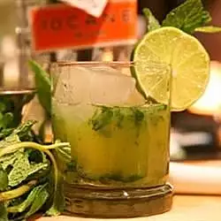

Mojito cocktail

These are great for the kids or for anyone who wants a refreshing alcohol-free drink.
INGREDIENTS
- 2 cups water
- 1½ cups white sugar
- 2 cups mint leaves, chopped
- 2 cups lime sherbet, softened
- 1 cup lime juice
- 1 cup water
- 8 cups club soda
- lime slices for garnish
STEPS
Step 1
- Combine 2 cups water and the sugar in a microwave-safe bowl; heat in microwave on High
for 5 minutes. Stir the mint into the water; let stand for 5 minutes. Strain and
discard the mint leaves from the syrup; set aside.n
Step 2
- Stir the lime sherbet, lime juice, and 1 cup water together in a large pitcher until
well combined. Pour the mint-infused syrup into the mixture. Add club soda and stir.
Serve over ice. Garnish with lime slices.n